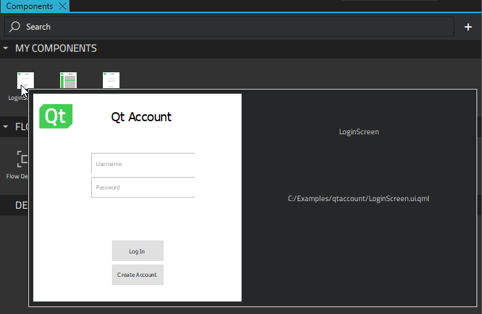

Adding Flow Items
After you create a Flow View component, you can use a project wizard template to add a Flow Item component for each screen in the UI.
If you imported your screen designs from a design tool as individual components (.ui.qml files), you can use them as content for flow items. The imported components are listed in Components > My Components.
If you are building your UI from scratch in Qt Design Studio, you must first add components to the flow items to create the screens as you would any components. For more information, see Using Components. The flow items that you attach the components to are listed under My Components.

Note: You must use the wizard to create the flow items. After you create a flow view, the Flow View module is added to Components. It contains a Flow Item component that you can use to apply states to flow items, and that you should use solely for that purpose.
To add flow items:
- Select File > New File > Qt Quick Files > Flow Item and follow the instructions of the wizard to create flow items for each screen in the UI.
- Add content to the flow item in one of the following ways:
- In Properties, edit the properties of each flow item.
You can now drag the flow items from Components > My Components to the flow view in the 2D or Navigator view. When you have all the flow items in place, you can add action areas to them to create transitions between them.
Flow Item Properties
You can specify basic properties for a Flow Item component in the Component, Geometry - 2D, and Visibility sections in the Properties view. Specify flow item properties in the Flow Item section.

The State change target and Target state properties are used to apply states in flows.
To include another flow view into a flow view, select the UI file (.ui.qml) that specifies the flow view in the Loader source field.
Usually, a flow item is inactive and invisible when it is not currently selected in the flow. Especially, all events from the flow item are ignored. To make a flow item always active, so that another flow item within it can respond to events and trigger the opening of a dialog, for example, select the Force active check box.
By default, transitions are drawn from action areas to the target flow item. To draw the transitions from the edges of flow items instead, select the Join lines check box in the Transition Lines section.
In the Layout tab, you can use anchors to position the component.
In the Advanced section, you can manage the more advanced properties of components.